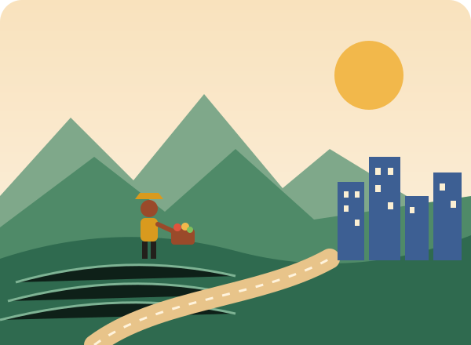
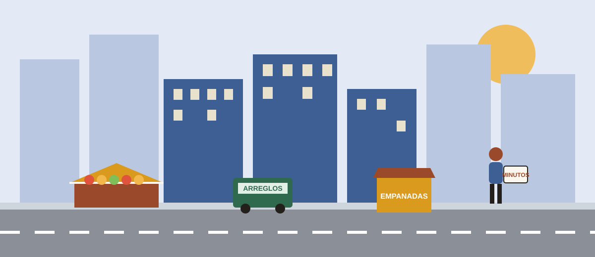

En Colombia, más de la mitad de quienes trabajan lo hacen en la informalidad, y en el campo son más de ocho de cada diez. Este blog muestra, con datos y en palabras sencillas, por qué tanta gente emprende por necesidad y qué podemos hacer desde la ciudad para apoyarla.


Presentación del proyecto y lectura multidimensional del problema: informalidad, micronegocios y negocios que no llegan a los cinco años.

Problemática, contexto del territorio con mapa, objetivos, justificación y referencias del proyecto.
Hace parte de la Práctica en Responsabilidad Social de UNIMINUTO. Usa herramientas digitales (este blog, redes sociales, un webinar y una entrevista) para entender un problema social y actuar sobre él.
Personas de la ciudad con algún poder de compra que, bien informadas, pueden preferir a los pequeños emprendedores y a los campesinos y comprarles directamente.
Cifras oficiales (DANE, Confecámaras, CEPAL) explicadas con gráficos, y ejemplos de iniciativas que ya están conectando el campo con la ciudad.